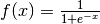
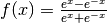
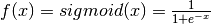
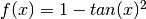

learninspy.dnn package¶
Submodules¶
learninspy.dnn.activations module¶
- learninspy.dnn.activations.identity(x)¶
Identidad

- learninspy.dnn.activations.identity_d(x)¶
Derivada de Identidad

- learninspy.dnn.activations.lrelu(x)¶
Leaky ReLU

- learninspy.dnn.activations.lrelu_d(x)¶
Derivada de Leaky ReLU

- learninspy.dnn.activations.relu(x)¶
Rectifier Linear Unit (ReLU)

- learninspy.dnn.activations.relu_d(x)¶
Derivada de ReLU

- learninspy.dnn.activations.sigmoid(x)¶
Sigmoidea

- learninspy.dnn.activations.sigmoid_d(x)¶
Derivada de Sigmoidea

- learninspy.dnn.activations.softplus(x)¶
Softplus

- learninspy.dnn.activations.softplus_d(x)¶
Derivada de Softplus

- learninspy.dnn.activations.tanh(x)¶
Tangente Hiperbolica
- learninspy.dnn.activations.tanh_d(x)¶
Derivada de Tangente Hiperbolica

learninspy.dnn.autoencoder module¶
- class learninspy.dnn.autoencoder.AutoEncoder(params=None, list_layers=None, dropout_in=0.0, sparsity_beta=0, sparsity_param=0.05)¶
Clases base: learninspy.dnn.model.NeuralNetwork
Tipo de red neuronal, compuesto de una capa de entrada, una oculta, y una de salida. Las unidades en la capa de entrada y la de salida son iguales, y en la capa oculta se entrena una representación de la entrada en distinta dimensión. A las conexiones entre la capa de entrada y la oculta se le denominan encoder, y a las de la oculta a la salida se les llama decoder.
>>> ae_params = NetworkParameters(units_layers=[5,3,5], activation='Tanh', dropout_ratios=None, classification=False) >>> ae = AutoEncoder(ae_params)
- assert_regression()¶
Se asegura que la capa de salida sea de regresión
- encode(x)¶
Codifica la entrada x sobre la
- encoder_layer()¶
- evaluate(data, predictions=False)¶
Evalúa AutoEncoder sobre un conjunto de datos. Se utiliza
 como métrica en la evaluación.
como métrica en la evaluación.Parámetros: - data – list
- predictions – si es True, retorna las predicciones (salida del AutoEncoder)
Devuelve: resultado de
, y predicciones si se solicita en predictions
- kl_divergence(x)¶
- class learninspy.dnn.autoencoder.StackedAutoencoder(params=None, list_layers=None, dropout=None, sparsity_beta=0, sparsity_param=0.05)¶
Clases base: learninspy.dnn.model.NeuralNetwork
- finetune(train, valid, criterions=None, mini_batch=50, parallelism=4, optimizer_params=None, keep_best=False)¶
- fit(train, valid=None, stops=None, mini_batch=50, parallelism=4, optimizer_params=None, keep_best=False)¶
Parámetros: - train –
- valid –
- stops –
- mini_batch –
- parallelism –
- optimizer_params –
- keep_best –
Devuelve:
- predict(x)¶
learninspy.dnn.loss module¶
- learninspy.dnn.loss.cross_entropy(y, t)¶
- learninspy.dnn.loss.cross_entropy_d(y, t)¶
- learninspy.dnn.loss.mse(value, target)¶
- learninspy.dnn.loss.mse_d(value, target)¶
learninspy.dnn.model module¶
- class learninspy.dnn.model.ClassificationLayer(n_in=2, n_out=2, activation='ReLU', distribute=False, w=None, b=None, sparsity=False, rng=None)¶
Clases base: learninspy.dnn.model.NeuralLayer
- dropoutput(x, p, grad=False)¶
- output(x, grad=False)¶
- class learninspy.dnn.model.NetworkParameters(units_layers, activation='ReLU', layer_distributed=None, dropout_ratios=None, classification=True, strength_l1=1e-05, strength_l2=0.0001, seed=123)¶
- class learninspy.dnn.model.NeuralLayer(n_in=2, n_out=2, activation='ReLU', distribute=False, w=None, b=None, sparsity=False, rng=None)¶
Clases base: object
- dropoutput(x, p, grad=False)¶
- get_bias()¶
- get_weights()¶
- l1()¶
- l2()¶
- output(x, grad=False)¶
- persist_layer()¶
- unpersist_layer()¶
- update(step_w, step_b)¶
- class learninspy.dnn.model.NeuralNetwork(params, list_layers=None)¶
Clases base: object
- check_gradients()¶
- check_stop(epochs, criterions, check_all=False)¶
- cost(features, label)¶
- evaluate(data, predictions=False)¶
Parámetros: - data – list of LabeledPoint
- predictions – bool, for returning predictions too
Devuelve:
- fit(train, valid=None, stops=None, mini_batch=50, parallelism=4, optimizer_params=None, keep_best=False)¶
- l1()¶
- l2()¶
- load(name, path)¶
- persist_layers()¶
- predict(x)¶
- save(name, path)¶
- train(train_bc, mini_batch=50, parallelism=4, optimizer_params=None)¶
Parámetros: - train_bc –
- mini_batch –
- parallelism –
- optimizer_params –
Devuelve:
- unpersist_layers()¶
- update(stepw, stepb)¶
- class learninspy.dnn.model.RegressionLayer(n_in=2, n_out=2, activation='ReLU', distribute=False, w=None, b=None, sparsity=False, rng=None)¶
Clases base: learninspy.dnn.model.NeuralLayer
- dropoutput(x, p, grad=False)¶
learninspy.dnn.neurons module¶
- class learninspy.dnn.neurons.DistributedNeurons(mat, shape)¶
Clases base: object
- activation(fun)¶
- collect()¶
- count()¶
- dot(*args)¶
- dropout(p)¶
- l1()¶
- l2()¶
- loss(fun, y)¶
- loss_d(fun, y)¶
- matrix()¶
- mse(*args)¶
- mse_d(*args)¶
- mul_array(array)¶
- mul_array2(array)¶
- mul_arrayrdd(*args)¶
- mul_arrayrdd2(*args)¶
- mul_elemwise(*args)¶
- outer(array)¶
- persist()¶
- shape¶
- softmax()¶
- sum()¶
- sum_array(*args)¶
- unpersist()¶
- zip(rdd)¶
- class learninspy.dnn.neurons.LocalNeurons(mat, shape)¶
Clases base: object
- activation(fun)¶
- collect()¶
- count()¶
- dot(vec)¶
- dropout(p)¶
- l1()¶
- l2()¶
- loss(fun, y)¶
- loss_d(fun, y)¶
- mse(y)¶
- mse_d(y)¶
- mul_array(array)¶
- mul_array2(array)¶
- mul_arrayrdd(rdd)¶
- mul_elemwise(array)¶
- outer(array)¶
- persist()¶
- shape¶
- softmax()¶
- sum()¶
- sum_array(array)¶
- transpose()¶
- unpersist()¶
- zip(rdd)¶
learninspy.dnn.optimization module¶
- class learninspy.dnn.optimization.Adadelta(model, data, parameters=None)¶
Clases base: learninspy.dnn.optimization.Optimizer
- class learninspy.dnn.optimization.GD(model, data, parameters=None)¶
Clases base: learninspy.dnn.optimization.Optimizer
- class learninspy.dnn.optimization.Optimizer(model, data, parameters=None)¶
Clases base: object
- check_stop(check_all=False)¶
- results()¶
- class learninspy.dnn.optimization.OptimizerParameters(algorithm='Adadelta', options=None, stops=None, merge_criter='w_avg', merge_goal='hits')¶
- learninspy.dnn.optimization.merge_models(results_rdd, criter='w_avg', goal='hits')¶
Funcion para hacer merge de modelos, en base a un criterio de ponderacion sobre un valor objetivo :param results_rdd: :param criter: :param goal: :return:
- learninspy.dnn.optimization.mix_models(left, right)¶
Se devuelve el resultado de sumar las NeuralLayers de left y right :param left: list of NeuralLayer :param right: list of NeuralLayer :return: list of NeuralLayer
- learninspy.dnn.optimization.optimize(model, data, mini_batch=50, params=None, seed=123)¶
learninspy.dnn.stops module¶
Este módulo está basado en funcionalidades de ‘climin’, un package de Python para optimización en escenarios de machine learning. > J.Bayer and C.Osendorfer and S. Diot-Girard and T. Rückstiess and Sebastian Urban. climin - A pythonic framework for gradient-based function optimization. TUM Tech Report. 2015. Para más detalles, ingresar al repositorio: https://github.com/BRML/climin
- learninspy.dnn.stops.OnSignal¶
alias de OnUnixSignal
- class learninspy.dnn.stops.OnUnixSignal(sig=2)¶
Clases base: object
Stopping criterion that is sensitive to some signal.
- handler(signal, frame)¶
- class learninspy.dnn.stops.OnWindowsSignal(sig=None)¶
Clases base: object
Stopping criterion that is sensitive to signals Ctrl-C or Ctrl-Break on Windows.
- handler(ctrl_type)¶